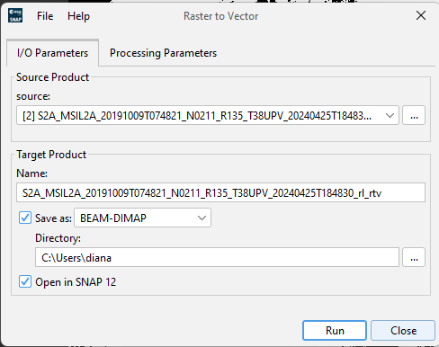
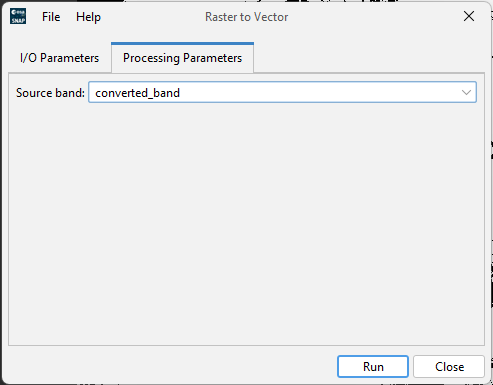

| Reprojection |
|
The RasterToVectorOp converts all adjacent pixels with the same value from a raster band (with integer values) to a vector.
I/O Parameters |
|
Source ProductName: The name of the source product. The combo box presents a list of all products opened in SNAP. The user may select one of these or, by clicking on the button next to the combo box, choose a product from the file system. Target ProductName: Used to specify the name of the target product. Save as: Used to specify whether the target product should be saved to the file system. The combo box presents a list of file formats. The text field allows to specify a target directory. Open in SNAP: Used to specify whether the target product should be opened in SNAP. When the target product is not saved, it is opened in SNAP automatically. |
 |
Processing Parameters |
|
Source bandThe name of the band to convert. |
 |
The target product will contain a shapes vector data with all the identidfied polygons. The result can be exported as a Shape file and then applied to a band of the product.